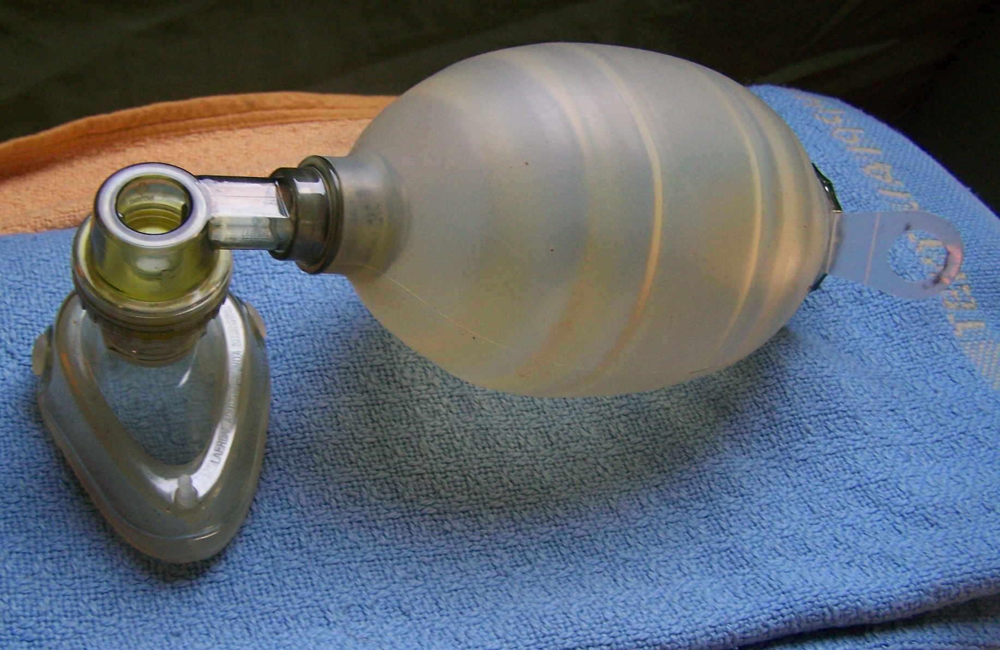

Onset · intervalo · tetos 20/10 · subdosagem por medo de IOT
1. Onset: menos de 1 minuto
O benzo chega no neurônio em menos de 1 minuto. Em menos de 1 minuto, diazepam ou midazolam podem parar a crise — funcionam muito bem se dose plena.
2. Esperar e repetir até o teto
Após a dose: aguardar 3 a 5 minutos. Se não melhorar: repetir a dose necessária — repetir até a dose máxima (teto).
📋 CAIXA-NUANÇA · [056]
Fonte: faixa 3–5 min. Protocolos BR institucionais (HC-UFMG, Einstein) tendem a cravar ~5 min como intervalo de reavaliação/repetição. Não reescreve a faixa; afina a prova/protocolo.
3. Tetos
10 mg
DZP 1º bolus
→
3–5′
espera
→
+10 mg
DZP 2º bolus
→
20 mg
TETO DZP
10 mg
MDZ amp → TETO
📋 CAIXA-NUANÇA · [059]
Em adultos o primeiro bolus costuma ser 10 mg; o 20 é o teto cumulativo (ou via retal). Lê-se como teto, não como dose única inicial obrigatória de 20.
4. Pegadinha dual de prova
A questão pode mandar repetir (ainda abaixo do teto) ou não repetir (já no teto). Lê o que já foi dado.
5. O medo de intubar
Na maioria absoluta, com dose adequada, o paciente sai da crise com benzodiazepínico. Motivo frequente de falha: medo de rebaixar demais e ter que intubar → subdosagem. Em doses altas e forma rápida na veia, a via aérea é preocupação real — material de VA deve estar pronto.
📦 Box digressão [068]
Já se viu paciente rebaixar e precisar de IOT com apenas 5 mg de diazepam — não é o padrão, mas situações não-padrão existem. Por isso VA pronta ≠ "dar dose homeopática".
🔄 Repetir
Abaixo do teto → pode repetir
⛔ Não repetir
Já no teto → seguir escada (2º fármaco)

VA pronta · dose plena — BVM/AMBU (Hospital, 2009 · CC BY-SA 3.0). Wikimedia Commons. VA pronta · dose plena
⚠️ Erro comum
"Vou dar só 2–3 mg pra não intubar" — e a crise não para.
Por que importa
Subdosagem por medo de intubar = crise que não para.
📌 Resumo operacional
Efeito em <1 min. Espera 3–5 min. Repete até teto: DZP 20 mg · MDZ 10 mg. Medo de IOT não autoriza dose pífia; VA pronta.
🧠 Quiz
Q1. Paciente recebeu 20 mg de diazepam IV no total; crise persiste. Conduta sobre mais diazepam:
Q2. Após 10 mg de DZP e 5 min, crise continua. Melhor leitura: